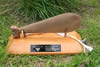

You will find items of general news on this page. For notification of events, results of events, and stories relating to events see the Event Calendar and/or the Results.
For a good range of news items, both Local and International, see the New Zealand Orienteering Federation website maintained by Michael Wood.
See below for Newsletters
Latest| NZRA member and rogaine organiser Grant Hunter has published a book "Coast to Coast- Who was First?", released for the 25th anniversary event. Grant's story covers the Maori greenstone trails, the explorers and surveyors, and recreationalists from the 1890s through to the Coast to Coast. Order form |
| 2006 Maori Language Week Award for Wairewa Rogaine |  |